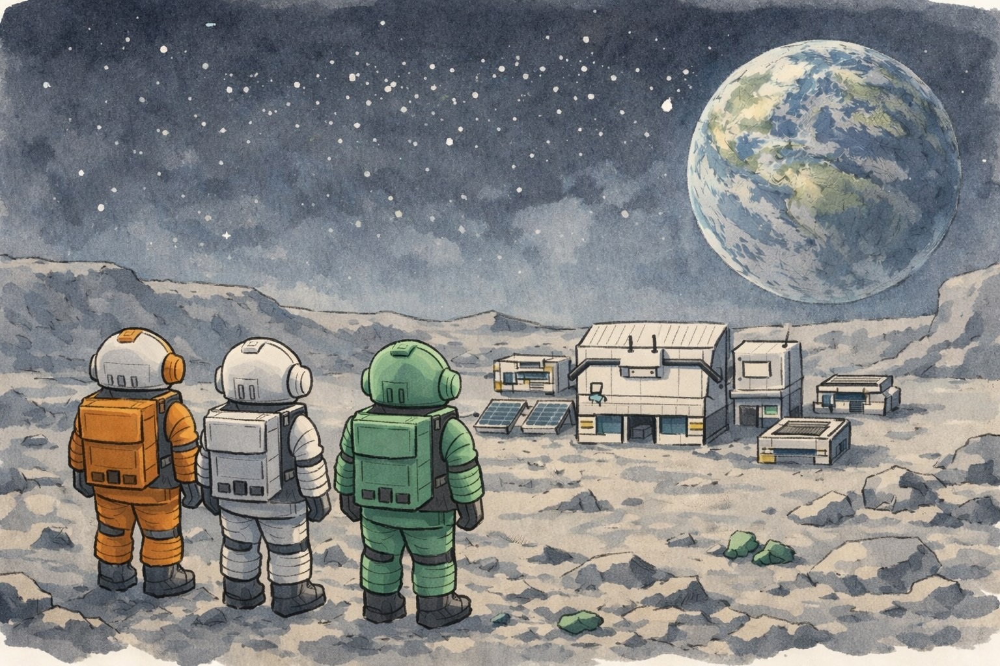

Kosmograd is a Soviet-themed lunar colony survival RTS I'm building solo in Godot 4.3+. Manage oxygen-starved cosmonauts, construct pressurized habitats, and balance power grids during the Cold War space race. Think RimWorld's emergent chaos meets Command & Conquer's base-building with Oxygen Not Included's survival pressure.
Status: 70% complete • Targeting Q2 2026 Steam release under Redshift Labs

Godot 4.3+
Claude Code
2025 - Q2 2026
RTS games aren't solo projects. They demand interconnected systems—pathfinding AI, resource economies, combat balance—that AAA studios assign to entire teams. Add part-time development and zero art budget, and scope management becomes critical.
Core challenges:
Studied RimWorld, Total War, C&C, and ONI to make smart UX decisions that create fun without hand-holding.
Shipped the core loop end-to-end using Godot's node system, GDScript, and Claude Code for technical acceleration.
Key systems:
Critical pivot: Early playtesting showed everything worked but felt identical. Players followed linear quest paths with no meaningful choices.
Solution: Stopped adding features. Made existing systems interesting. Deferred new resources/vehicles to Q2. Focused on variance—randomized starts, branching quests, exploration incentives before base commitment.
Refining for Q2 2026 Steam launch. The core works; now it needs to feel alive.
Current focus:
Then ship it.